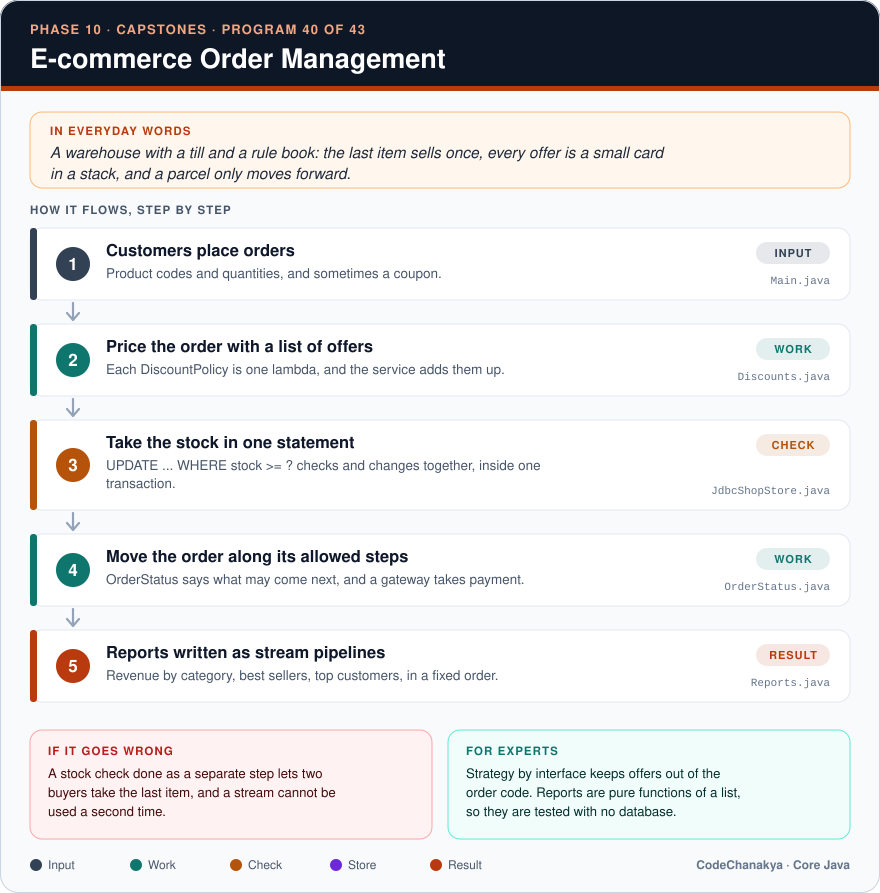

Phase 10 · Capstones · Program 40 of 43
E-commerce Order Management
The problem
A shop must answer three questions correctly every time. Can we really sell this, when two customers want the last keyboard? What does the order cost, when offers change every month? And what is allowed next, when a shipped order cannot be cancelled?
Stock is taken with a single UPDATE that checks and changes together, so the last item sells once. Discounts are a list of small policies, so a new offer is one new lambda. The reports at the end are plain stream pipelines over a list of orders.
See the flow
The whole program as one picture. Read it top to bottom; the colour of each card says what kind of step it is.


If you are new to coding
A warehouse with a till and a rule book: the last item sells once, every offer is a small card in a stack, and a parcel only moves forward.
If you are learning
Follow the numbered cards from top to bottom. Open the file named on each card, run the program, and match its output to the last card.
If you are experienced
Strategy by interface keeps offers out of the order code. Reports are pure functions of a list, so they are tested with no database.
Text version of the flow
- Customers place orders (input): Product codes and quantities, and sometimes a coupon.
- Price the order with a list of offers (work): Each DiscountPolicy is one lambda, and the service adds them up.
- Take the stock in one statement (check): UPDATE ... WHERE stock >= ? checks and changes together, inside one transaction.
- Move the order along its allowed steps (work): OrderStatus says what may come next, and a gateway takes payment.
- Reports written as stream pipelines (result): Revenue by category, best sellers, top customers, in a fixed order.
Read in this order
- 1OrderStatus.javaAn enum that knows its own allowed next steps.
- 2DiscountPolicy.java, Discounts.javaOne method, so each offer is a lambda.
- 3JdbcShopStore.javaAll the SQL. The stock check and the order save are one transaction.
- 4OrderService.javaPrices, discounts, payment and status changes.
- 5Reports.javaEight pure stream functions.
- 6Main.javaEight order attempts and a full order life.
The code
package com.codechanakya.shop; import java.math.BigDecimal; import java.sql.Connection; import java.sql.Date; import java.sql.PreparedStatement; import java.sql.ResultSet; import java.sql.SQLException; import java.sql.Statement; import java.time.LocalDate; import java.util.ArrayList; import java.util.List; import java.util.Optional; /** * The Derby version of {@link ShopStore}. All SQL in the shop is in this one class. * * <p>Stock is taken with {@code UPDATE product SET stock = stock - ? WHERE sku = ? AND stock >= ?}. The * check and the change are one statement, so two customers cannot both buy the last item. If the statement * changes no row, the stock was not there, and the whole order is rolled back. */ public class JdbcShopStore implements ShopStore { private final ConnectionProvider provider; public JdbcShopStore(ConnectionProvider provider) { this.provider = provider; } @Override public void addProduct(Product p) { try (Connection c = provider.open(); PreparedStatement s = c.prepareStatement( "INSERT INTO product (sku, name, category, price, stock) VALUES (?, ?, ?, ?, ?)")) { s.setString(1, p.sku()); s.setString(2, p.name()); s.setString(3, p.category().name()); s.setBigDecimal(4, p.price()); s.setInt(5, p.stock()); s.executeUpdate(); } catch (SQLException e) { throw translate("Adding a product", e); } } @Override public Optional<Product> findProduct(String sku) { return queryProducts("SELECT sku, name, category, price, stock FROM product WHERE sku = ?", sku).stream().findFirst(); } @Override public List<Product> products() { return queryProducts("SELECT sku, name, category, price, stock FROM product ORDER BY sku"); } @Override public Customer addCustomer(String name, String city) { try (Connection c = provider.open(); PreparedStatement s = c.prepareStatement( "INSERT INTO customer (name, city) VALUES (?, ?)", Statement.RETURN_GENERATED_KEYS)) { s.setString(1, name); s.setString(2, city); s.executeUpdate(); try (ResultSet keys = s.getGeneratedKeys()) { keys.next(); return new Customer(keys.getInt(1), name, city); } } catch (SQLException e) { throw translate("Adding a customer", e); } } @Override public Optional<Customer> findCustomer(int id) { try (Connection c = provider.open(); PreparedStatement s = c.prepareStatement( "SELECT id, name, city FROM customer WHERE id = ?")) { s.setInt(1, id); try (ResultSet r = s.executeQuery()) { return r.next() ? Optional.of(new Customer(r.getInt(1), r.getString(2), r.getString(3))) : Optional.empty(); } } catch (SQLException e) { throw translate("Finding a customer", e); } } @Override public Order placeOrder(int customerId, List<OrderLine> lines, BigDecimal discount, LocalDate date) { try (Connection c = provider.open()) { c.setAutoCommit(false); try { for (OrderLine line : lines) { try (PreparedStatement s = c.prepareStatement( "UPDATE product SET stock = stock - ? WHERE sku = ? AND stock >= ?")) { s.setInt(1, line.quantity()); s.setString(2, line.sku()); s.setInt(3, line.quantity()); if (s.executeUpdate() == 0) { throw new OutOfStockException(line.sku(), line.quantity()); } } } BigDecimal subtotal = lines.stream().map(OrderLine::total).reduce(BigDecimal.ZERO, BigDecimal::add); BigDecimal total = subtotal.subtract(discount); int id; try (PreparedStatement s = c.prepareStatement( "INSERT INTO orders (customer_id, status, discount, total, placed_on) VALUES (?, ?, ?, ?, ?)", Statement.RETURN_GENERATED_KEYS)) { s.setInt(1, customerId); s.setString(2, OrderStatus.NEW.name()); s.setBigDecimal(3, discount); s.setBigDecimal(4, total); s.setDate(5, Date.valueOf(date)); s.executeUpdate(); try (ResultSet keys = s.getGeneratedKeys()) { keys.next(); id = keys.getInt(1); } } for (OrderLine line : lines) { try (PreparedStatement s = c.prepareStatement( "INSERT INTO order_line (order_id, sku, quantity, unit_price) VALUES (?, ?, ?, ?)")) { s.setInt(1, id); s.setString(2, line.sku()); s.setInt(3, line.quantity()); s.setBigDecimal(4, line.unitPrice()); s.executeUpdate(); } } c.commit(); return new Order(id, customerId, OrderStatus.NEW, lines, discount, total, date); } catch (SQLException | RuntimeException e) { c.rollback(); if (e instanceof SQLException sql) { throw translate("Placing an order", sql); } throw (RuntimeException) e; } } catch (SQLException e) { throw translate("Placing an order", e); } } @Override public Optional<Order> findOrder(int id) { return queryOrders("SELECT id, customer_id, status, discount, total, placed_on FROM orders WHERE id = ?", id) .stream().findFirst(); } @Override public List<Order> orders() { return queryOrders("SELECT id, customer_id, status, discount, total, placed_on FROM orders ORDER BY id"); } @Override public void updateStatus(int orderId, OrderStatus status) { try (Connection c = provider.open(); PreparedStatement s = c.prepareStatement( "UPDATE orders SET status = ? WHERE id = ?")) { s.setString(1, status.name()); s.setInt(2, orderId); s.executeUpdate(); } catch (SQLException e) { throw translate("Updating an order", e); } } @Override public void cancelAndRestock(int orderId) { Order order = findOrder(orderId).orElseThrow(() -> new ShopException("No order with id " + orderId)); try (Connection c = provider.open()) { c.setAutoCommit(false); try { for (OrderLine line : order.lines()) { try (PreparedStatement s = c.prepareStatement("UPDATE product SET stock = stock + ? WHERE sku = ?")) { s.setInt(1, line.quantity()); s.setString(2, line.sku()); s.executeUpdate(); } } try (PreparedStatement s = c.prepareStatement("UPDATE orders SET status = ? WHERE id = ?")) { s.setString(1, OrderStatus.CANCELLED.name()); s.setInt(2, orderId); s.executeUpdate(); } c.commit(); } catch (SQLException e) { c.rollback(); throw translate("Cancelling an order", e); } } catch (SQLException e) { throw translate("Cancelling an order", e); } } private List<Product> queryProducts(String sql, Object... params) { try (Connection c = provider.open(); PreparedStatement s = c.prepareStatement(sql)) { bind(s, params); try (ResultSet r = s.executeQuery()) { List<Product> list = new ArrayList<>(); while (r.next()) { list.add(new Product(r.getString(1), r.getString(2), Category.valueOf(r.getString(3)), r.getBigDecimal(4), r.getInt(5))); } return list; } } catch (SQLException e) { throw translate("Reading products", e); } } private List<Order> queryOrders(String sql, Object... params) { try (Connection c = provider.open(); PreparedStatement s = c.prepareStatement(sql)) { bind(s, params); List<Order> list = new ArrayList<>(); try (ResultSet r = s.executeQuery()) { while (r.next()) { list.add(new Order(r.getInt(1), r.getInt(2), OrderStatus.valueOf(r.getString(3)), List.of(), r.getBigDecimal(4), r.getBigDecimal(5), r.getDate(6).toLocalDate())); } } List<Order> full = new ArrayList<>(); for (Order o : list) { full.add(new Order(o.id(), o.customerId(), o.status(), linesOf(c, o.id()), o.discount(), o.total(), o.placedOn())); } return full; } catch (SQLException e) { throw translate("Reading orders", e); } } private List<OrderLine> linesOf(Connection c, int orderId) throws SQLException { try (PreparedStatement s = c.prepareStatement( "SELECT sku, quantity, unit_price FROM order_line WHERE order_id = ? ORDER BY sku")) { s.setInt(1, orderId); try (ResultSet r = s.executeQuery()) { List<OrderLine> lines = new ArrayList<>(); while (r.next()) { lines.add(new OrderLine(r.getString(1), r.getInt(2), r.getBigDecimal(3))); } return lines; } } } private static void bind(PreparedStatement s, Object[] params) throws SQLException { for (int i = 0; i < params.length; i++) { s.setObject(i + 1, params[i]); } } /** 23505 is a duplicate key, 23513 a broken CHECK rule. */ private static ShopException translate(String action, SQLException e) { if ("23505".equals(e.getSQLState())) { return new ShopException(action + " failed: that already exists"); } return new ShopException(action + " failed (SQLState " + e.getSQLState() + "): " + e.getMessage(), e); } }
package com.codechanakya.shop; import java.math.BigDecimal; import java.util.EnumMap; import java.util.List; import java.util.Map; import java.util.TreeMap; import java.util.stream.Collectors; /** * Reports on a list of orders, written as streams. Each method is a pure function of its input: give it * the same orders and it gives the same answer, which is what makes it easy to test. */ public final class Reports { private Reports() { } /** Orders that count as sales: everything except cancelled ones. */ public static List<Order> sales(List<Order> orders) { return orders.stream().filter(o -> o.status() != OrderStatus.CANCELLED).toList(); } /** How many orders are in each status. Every status appears, even with zero. */ public static Map<OrderStatus, Long> countByStatus(List<Order> orders) { Map<OrderStatus, Long> counts = new EnumMap<>(OrderStatus.class); for (OrderStatus status : OrderStatus.values()) { counts.put(status, 0L); } orders.forEach(o -> counts.merge(o.status(), 1L, Long::sum)); return counts; } /** Revenue per category, from line totals of sales only. Categories come out in the order they are declared in {@link Category}. */ public static Map<Category, BigDecimal> revenueByCategory(List<Order> orders, List<Product> catalogue) { Map<String, Category> categoryOf = catalogue.stream().collect(Collectors.toMap(Product::sku, Product::category)); return sales(orders).stream() .flatMap(o -> o.lines().stream()) .collect(Collectors.groupingBy(line -> categoryOf.get(line.sku()), () -> new TreeMap<>(), Collectors.reducing(BigDecimal.ZERO.setScale(2), OrderLine::total, BigDecimal::add))); } /** Units sold per product, best seller first; ties go to the lower sku. */ public static List<Map.Entry<String, Integer>> bestSellers(List<Order> orders, int limit) { return sales(orders).stream() .flatMap(o -> o.lines().stream()) .collect(Collectors.groupingBy(OrderLine::sku, TreeMap::new, Collectors.summingInt(OrderLine::quantity))) .entrySet().stream() .sorted(Map.Entry.<String, Integer>comparingByValue().reversed().thenComparing(Map.Entry.comparingByKey())) .limit(limit) .toList(); } /** What each customer has spent on sales, biggest spender first; ties go to the lower id. */ public static List<Map.Entry<Integer, BigDecimal>> topCustomers(List<Order> orders, int limit) { return sales(orders).stream() .collect(Collectors.groupingBy(Order::customerId, TreeMap::new, Collectors.reducing(BigDecimal.ZERO.setScale(2), Order::total, BigDecimal::add))) .entrySet().stream() .sorted(Map.Entry.<Integer, BigDecimal>comparingByValue().reversed().thenComparing(Map.Entry.comparingByKey())) .limit(limit) .toList(); } /** The mean order value over sales, or zero when there are none. */ public static BigDecimal averageOrderValue(List<Order> orders) { List<Order> sold = sales(orders); if (sold.isEmpty()) { return BigDecimal.ZERO.setScale(2); } BigDecimal sum = sold.stream().map(Order::total).reduce(BigDecimal.ZERO, BigDecimal::add); return sum.divide(BigDecimal.valueOf(sold.size()), 2, java.math.RoundingMode.HALF_UP); } /** Products with fewer than {@code threshold} units left, as sku to stock, sorted by sku. */ public static Map<String, Integer> lowStock(List<Product> catalogue, int threshold) { return catalogue.stream().filter(p -> p.stock() < threshold) .collect(Collectors.toMap(Product::sku, Product::stock, (a, b) -> a, TreeMap::new)); } /** The names of customers by city, sorted. */ public static Map<String, List<String>> customersByCity(List<Customer> customers) { return customers.stream().collect(Collectors.groupingBy(Customer::city, TreeMap::new, Collectors.mapping(Customer::name, Collectors.collectingAndThen(Collectors.toList(), names -> names.stream().sorted().toList())))); } }
Only the key files are shown. The rest are in the repository.
Run it
$ ./run.sh --check
== Catalogue
BK-101 Java Notebook BOOKS 450.00 stock 40
EL-201 Wireless Mouse ELECTRONICS 899.50 stock 15
EL-202 Mechanical Keyboard ELECTRONICS 4200.00 stock 5
HM-301 Desk Lamp HOME 1250.00 stock 12
TY-401 Puzzle Cube TOYS 199.00 stock 60
== Placing orders
Asha: 12 notebooks, 2 lamps: order 1, subtotal 7900.00, discount 935.00, total 6965.00
Bilal: 1 keyboard, 1 mouse, coupon WELCOME5: order 2, subtotal 5099.50, discount 509.96, total 4589.54
Chitra: 6 puzzle cubes, coupon FLAT100: order 3, subtotal 1194.00, discount 100.00, total 1094.00
Asha: 6 keyboards (only 4 left): refused, Not enough stock of EL-202 for 6
Bilal: 0 mice: refused, Quantity for EL-201 must be positive, but was 0
Nobody: 1 mouse: refused, No customer with id 99
Chitra: product ZZ-999: refused, No product ZZ-999
Chitra: 4 keyboards: order 4, subtotal 16800.00, discount 840.00, total 15960.00
-- orders after the orders
#1 customer 1 NEW total 6965.00 lines [BK-101x12, HM-301x2]
#2 customer 2 NEW total 4589.54 lines [EL-201x1, EL-202x1]
#3 customer 3 NEW total 1094.00 lines [TY-401x6]
#4 customer 3 NEW total 15960.00 lines [EL-202x4]
== Order life
Pay order 1 with card 4111: done
Pay order 2 with card 0000: refused, Payment of 4589.54 was declined
Ship order 2 before it is paid: refused, Order 2 is NEW and cannot become SHIPPED
Pay order 2 with card 5500: done
Ship order 2: done
Deliver order 2: done
Cancel order 2 (delivered): refused, Order 2 is DELIVERED and cannot become CANCELLED
Pay order 3 with card 4111: done
Cancel order 3 (paid, stock goes back): done
Pay order 4 with card 4111: done
Ship order 1: done
-- orders after the order life
#1 customer 1 SHIPPED total 6965.00 lines [BK-101x12, HM-301x2]
#2 customer 2 DELIVERED total 4589.54 lines [EL-201x1, EL-202x1]
#3 customer 3 CANCELLED total 1094.00 lines [TY-401x6]
#4 customer 3 PAID total 15960.00 lines [EL-202x4]
-- stock after the order life (order 3 was cancelled, so its cubes are back)
BK-101 Java Notebook stock 28
EL-201 Wireless Mouse stock 14
EL-202 Mechanical Keyboard stock 0
HM-301 Desk Lamp stock 10
TY-401 Puzzle Cube stock 60
== Reports
Orders by status: {NEW=0, PAID=1, SHIPPED=1, DELIVERED=1, CANCELLED=1}
Revenue by category: {ELECTRONICS=21899.50, BOOKS=5400.00, HOME=2500.00}
Best sellers: [BK-101=12, EL-202=5, HM-301=2]
Top customers: [3=15960.00, 1=6965.00]
Average order value: 9171.51
Low stock (under 10): {EL-202=0}
Customers by city: {Mumbai=[Bilal Khan], Pune=[Asha Rao, Chitra Nair]}
OK: output matches expected-output.txt
This is the real output from OpenJDK 21.0.13 on Linux, with the real Apache Derby 10.16.1.1 jars. The run is the same every time because the clock is fixed and the database lives in memory. The project's GitHub Actions run is the check on Java 21 and 25 with real Maven and the real JUnit jar. It has not yet been run on Windows or macOS. Run ./run.sh --test for the JUnit tests.
Try it yourself
- BeginnerAdd a LOYALTY discount for orders of 2,000 or more.
- IntermediateReport sales per day.
- IntermediateList customers with two or more sales.
- IntermediateAdd shipping under 1,000 and decide where it belongs.
- ChallengeAdd a returned status, with the stock going back.
- ChallengeWrap the gateway in one that retries once.
Hints and solutions are in the exercises and solutions folders. Try first.
Break it on purpose
Three files: a stock check done in a separate step from the update, a stream used twice, and a record that lets its list be changed from outside. The README in the broken folder explains each one.